Ingredients – Mode d’emploi (version 2)
Octobre 2026 · nouvelle présentation avec la barre en bas · pour Android 7.0 et plus récent
Ingredients vérifie les aliments pour vous : vous scannez le code-barres, et l’app vous dit si le produit convient à votre profil (sans porc ni alcool, végétarien, vegan, allergies, santé) – et pourquoi, avec les sources. Gratuit, sans publicité, vos données restent sur le téléphone.
Sommaire
- L’écran « Scanner » et la barre du bas
- Paramètres (la roue)
- Créer les profils (une seule fois)
- Ce que j’évite, allergies
- Ma santé et Mes règles
- Scanner un produit
- Lire le résultat
- Pourquoi ? et alternatives
- La liste des ingrédients surlignée
- Santé
- La fiche d’un ingrédient
- Comparer deux produits
- Historique et favoris
- Courses : la liste
- Planifier ses courses, avec rappel (nouveau)
- Courses : les tickets de caisse
- Sélectionner et envoyer plusieurs tickets (nouveau)
- Ajouter un ticket
- Consulter un ticket
- Rechercher un produit (la loupe)
- Photographier une étiquette, ajouter un produit
- Signaler une erreur, mises à jour, tout effacer
Partie A — Installer l’app
Avant de commencer
- Être en Wi-Fi (le fichier fait environ 57 Mo, « Universel » 121 Mo).
- Avoir au moins 500 Mo libres : Paramètres → Batterie et maintenance de l’appareil → Stockage.
- L’APK de la page de téléchargement.
Méthode 1 — Directement sur le téléphone (10 minutes)
- Désactiver le Blocage automatique (Samsung) : Paramètres → Sécurité et confidentialité → Blocage automatique → Désactivé (confirmez avec votre code).
- Désactiver la « Protection avancée » d’Android, si elle existe sur votre téléphone : tapez Protection avancée dans la barre de recherche des Paramètres. Si elle est activée, désactivez-la (elle interdit toute installation hors Play Store). Si la recherche ne trouve rien, passez à l’étape suivante.
- Télécharger l’APK : ouvrez le lien dans Chrome. Si Chrome avertit « ce type de fichier peut être dangereux », touchez Télécharger quand même. Attendez la fin du téléchargement.
- Ouvrir le fichier depuis « Mes fichiers » (pas depuis la notification) : Mes fichiers → Téléchargements → le fichier .apk.
- Autoriser cette source : le téléphone affiche « votre téléphone n’est pas autorisé à installer des applis inconnues provenant de cette source ». Touchez Paramètres, activez Autoriser à partir de cette source, puis revenez en arrière.
Chemin manuel si besoin : Paramètres → Applications → ⋮ (en haut à droite) → Accès spécial → Installer des applis inconnues → Mes fichiers (et aussi Chrome) → Autorisé. - Touchez Installer.
- Si Google Play Protect bloque (« Appli bloquée pour protéger votre appareil » ou « Appli non sécurisée ») : touchez Plus de détails → Installer quand même.
S’il n’y a que OK : ouvrez Play Store → votre photo de profil (en haut à droite) → Play Protect → ⚙ (roue dentée) et désactivez « Analyser les applis avec Play Protect », puis recommencez l’étape 4. - Ouvrez Ingredients. C’est installé.
- Remettez les protections : Blocage automatique activé, Play Protect activé, et retirez l’autorisation « Installer des applis inconnues » à Mes fichiers et Chrome. L’app reste installée et continue de recevoir ses mises à jour.
Ça ne marche pas ? Trouvez votre message
| Ce que vous voyez | Cause | Solution |
|---|---|---|
| « Installation bloquée » / « bloquée par le Blocage automatique » | Blocage automatique encore actif | Étape 1. Vérifiez qu’il est bien sur Désactivé, puis redémarrez le téléphone. |
| « …pas autorisé à installer des applis inconnues provenant de cette source » | L’app qui ouvre le fichier n’a pas la permission | Étape 5, pour Mes fichiers ET Chrome (et WhatsApp/Gmail si le fichier vient de là). |
| « Appli bloquée par Play Protect » / « Appli non sécurisée » | Google ne connaît pas l’app | Étape 7 (« Installer quand même » ou désactiver l’analyse Play Protect le temps de l’installation). |
| « Application non installée » / « Appli non installée car le package est en conflit » | Une ancienne version d’Ingredients venant d’une autre source est installée | Désinstallez l’ancienne Ingredients (appui long sur l’icône → Désinstaller), puis réinstallez. Vos réglages seront à refaire. |
| « Application non installée » / « non compatible » sans autre détail | Mauvais type de processeur, fichier incomplet ou manque de place | Prenez « Téléphones anciens (32 bits) » ou « Universel » sur la page de téléchargement. Vérifiez que le fichier est complet (57, 48 ou 121 Mo) dans Mes fichiers ; sinon supprimez-le et retéléchargez en Wi-Fi. Libérez de l’espace. |
| « Erreur d’analyse » / « Problème lors de l’analyse du package » | Fichier abîmé pendant le téléchargement | Supprimez-le, retéléchargez (méthode 1) ou transférez-le autrement (méthode 2). |
| Rien ne se passe quand on touche le fichier | Ouvert depuis la notification ou un aperçu | Ouvrez-le depuis Mes fichiers → Téléchargements. |
| « Bloqué par votre administrateur » / téléphone professionnel | Téléphone géré par une entreprise (Knox, profil pro) | Impossible de contourner : utilisez un téléphone personnel. |
| Tout a été fait et ça refuse encore | Blocage Samsung/Google non identifié | Méthode 3 (câble USB + ordinateur) : elle contourne l’installateur du téléphone. |
Méthode 2 — Recevoir le fichier autrement
Utile si le téléchargement échoue ou si le fichier est abîmé. Le fichier .apk peut être envoyé :
- par Quick Share depuis un autre téléphone Samsung ou un PC Windows (le fichier arrive dans Mes fichiers → Téléchargements) ;
- par câble USB depuis un ordinateur : branchez le téléphone, choisissez Transfert de fichiers dans la notification USB, copiez le fichier dans le dossier Download du téléphone.
Ensuite, reprenez la méthode 1 à partir de l’étape 4.
Méthode 3 — Câble USB + ordinateur (marche à coup sûr)
C’est la méthode qui a fonctionné quand l’installation directe était refusée. Il faut un ordinateur (Windows, Mac ou Linux) et un câble USB-C.
Sur le téléphone :
- Activez les options de développement : Paramètres → À propos du téléphone → Informations sur le logiciel → touchez 7 fois « Numéro de version » (entrez votre code). Le message « Mode développeur activé » apparaît.
- Paramètres → Options de développement → activez Débogage USB.
- Branchez le téléphone à l’ordinateur, déverrouillez l’écran. À la question « Autoriser le débogage USB ? », cochez Toujours autoriser depuis cet ordinateur → Autoriser.
Sur l’ordinateur :
- Téléchargez les « Android SDK Platform-Tools » officiels de Google : developer.android.com/tools/releases/platform-tools, et décompressez le dossier platform-tools (par exemple dans C:\platform-tools).
- Téléchargez le fichier .apk sur l’ordinateur (par exemple dans Téléchargements).
- Ouvrez un terminal dans le dossier platform-tools (Windows : dans l’Explorateur, tapez
cmddans la barre d’adresse puis Entrée) et tapez :
adb devices
Le téléphone doit apparaître avec le mot device. S’il y a unauthorized, regardez l’écran du téléphone et touchez Autoriser. Puis :
adb install -r "%USERPROFILE%\Downloads\ingredients.apk"
(remplacez par le vrai nom du fichier ; sur Mac/Linux : ./adb install -r ~/Downloads/ingredients.apk). Quand Success s’affiche, c’est installé.
Pour finir : Options de développement → Débogage USB → désactivé.
Après l’installation : les mises à jour
- À chaque ouverture, l’app télécharge la nouvelle version en arrière-plan. Un bandeau « Une nouvelle version de l’app est prête » propose Redémarrer pour l’installer.
- Scanner → roue ⚙ → Version de l’app montre la version et un bouton Rechercher une mise à jour.
- Pas besoin de réinstaller d’APK, sauf si on vous le demande explicitement.
Partie B — Utiliser l’app
1L’écran « Scanner » et la barre du bas
En bas, quatre boutons restent toujours visibles – un toucher suffit pour changer :
- Scanner (l’app s’ouvre ici) · Courses · Historique · Profil.
- En haut à droite : la loupe 🔍 pour chercher un produit par nom ou par marque, et la roue ⚙ des paramètres.
- Vérifier pour : indique pour quelle personne on vérifie (s’il y a plusieurs profils). Touchez un prénom pour changer.
- La carte verte explique le but de l’app : Mangez en connaissance de cause – comprendre ce que nous achetons et mangeons pour mieux protéger sa santé (Comprendre · Choisir · Suivre).
- Dessous : la caméra pour scanner, Photographier une étiquette, vos courses (nombre d’articles à acheter), Vérifiés récemment (vos trois derniers produits) et l’astuce du jour. Tout en bas : Partager l’app.

2Paramètres (la roue)
- Scanner → roue ⚙ en haut à droite.
- Langue : Français, Deutsch ou English. Au premier lancement, l’app prend la langue du téléphone.
- Affichage : Système (comme le téléphone), Clair ou Sombre.
- Version de l’app : votre version et Rechercher une mise à jour.
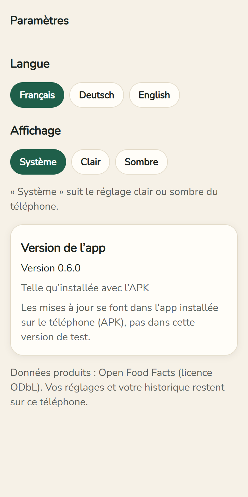
3Créer les profils (une seule fois)
Barre du bas → Profil. Tout reste uniquement sur votre téléphone.
- Dans Profils, « Moi » existe déjà. Pour une autre personne (ex. un enfant allergique) : écrivez son prénom → Ajouter un profil.
- Le profil en vert est celui que vous réglez et qui sert à tous les verdicts.
- Renommer change le nom ; « Supprimer le profil … » l’efface (après confirmation).
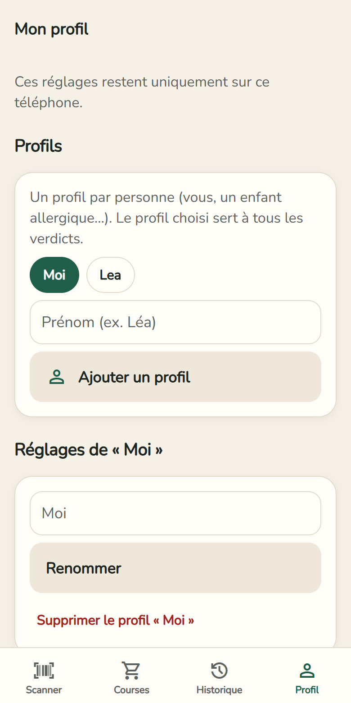
4Ce que j’évite, allergies
- Ce que j’évite : interrupteurs Sans porc ni alcool, Végétarien, Vegan. Sous chacun, ce qui est vérifié exactement. Avec Sans porc ni alcool, le résultat indique aussi, pour la viande, si un label halal est déclaré. Sans information halal, le verdict est « À vérifier ».
- Allergies et intolérances : touchez les 14 allergènes UE qui vous concernent. Ceux choisis deviennent verts.
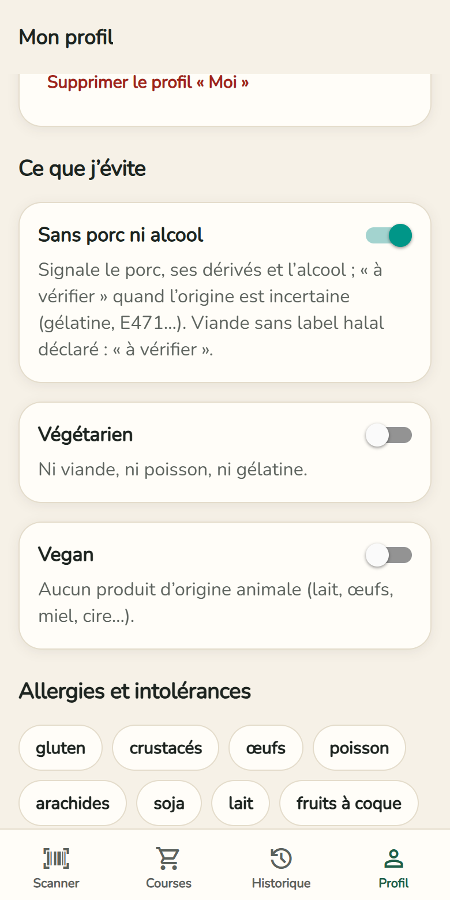
5Ma santé et Mes règles
- Ma santé : ce que votre médecin vous conseille de limiter – Sucres, Sel, Graisses saturées, Additifs à risque. Un produit trop riche passe alors « À vérifier ».
- Mes règles : un mot à repérer, par ex. « Palmöl ». Interdit ou À surveiller → Ajouter la règle. Supprimée par erreur ? Un bandeau Annuler apparaît quelques secondes.
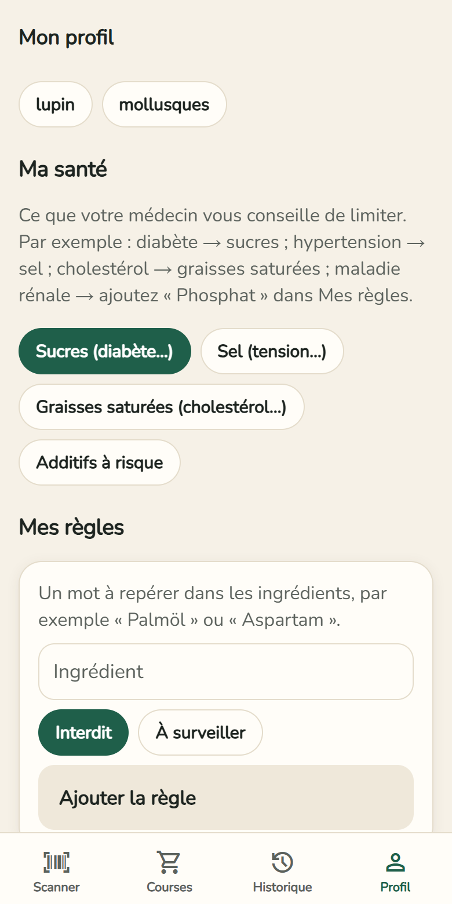
6Scanner un produit
- Barre du bas → Scanner. La caméra est juste sous la carte verte.
- La première fois : Autoriser la caméra. Les images ne sont ni enregistrées ni envoyées.
- Placez le code-barres dans le cadre : il devient vert, le téléphone vibre, le résultat s’ouvre.
- Ça ne lit pas ? Tapez les chiffres sous le code-barres → Vérifier ce code.
- Sur la même page : Photographier une étiquette quand un produit est inconnu.
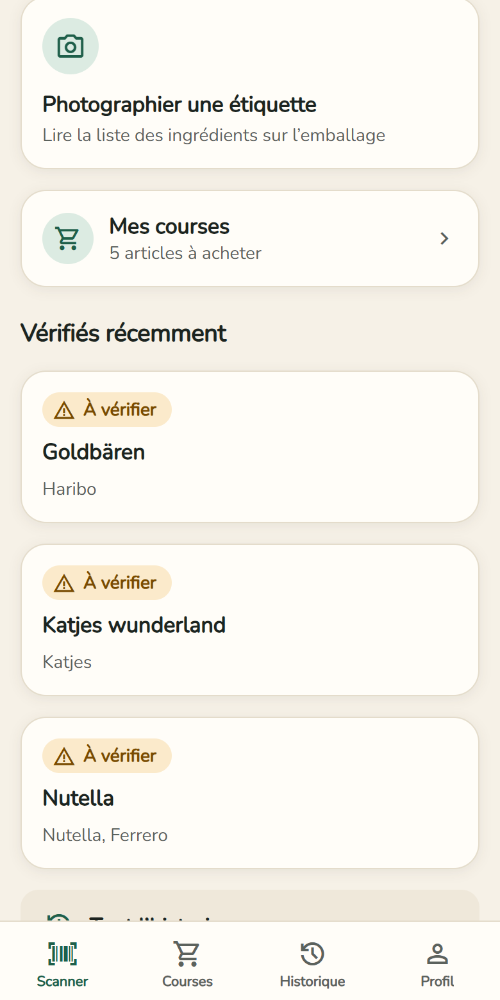
7Lire le résultat
- En haut : photo, nom et marque du produit.
- Trois boutons : ☆ Favori, + Liste de courses, ⇄ Comparer.
- Le verdict dans une carte de couleur : ✓ Compatible, ! À vérifier, ✕ Incompatible ou ? Inconnu. Dessous, la confiance.
- Écouter le résultat : le téléphone lit le verdict. La flèche en haut à gauche ramène là où vous étiez.

8Pourquoi ? et alternatives
- Pourquoi ? donne chaque raison du verdict, avec le mot tel qu’il est écrit sur l’emballage et la source.
- « À vérifier » veut dire que les données ne permettent pas de trancher (ex. gélatine sans espèce indiquée) : regardez l’emballage ou demandez au fabricant.
- Chercher des alternatives qui me conviennent : produits de la même catégorie qui vous conviennent. Sans publicité.
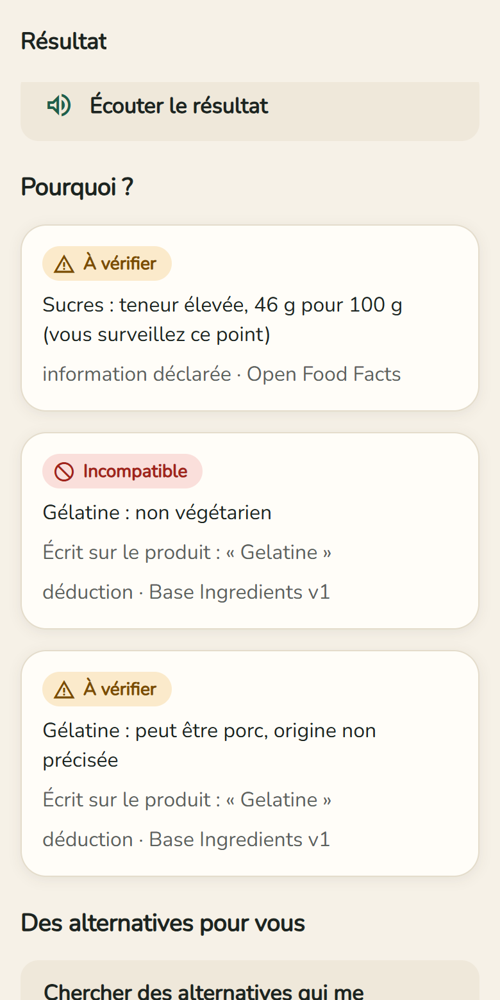
9La liste des ingrédients surlignée
- rouge = vous l’évitez · orange = à vérifier · violet = santé : à surveiller.
- Souligné = ingrédient expliqué : touchez-le. Pointillés = pas encore connu de l’app.
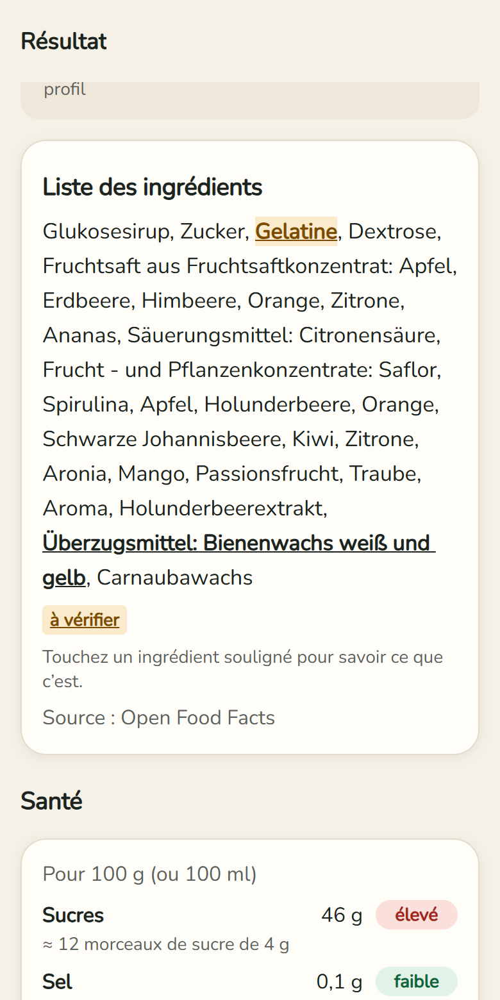
10Santé
- Sucres, sel, graisses saturées et matières grasses pour 100 g, avec faible / modéré / élevé ; sucres en morceaux de sucre, sel en % du maximum de l’OMS.
- Ingrédients à risque et leurs sources (OMS, EFSA…). Un produit sain reçoit Bon choix !
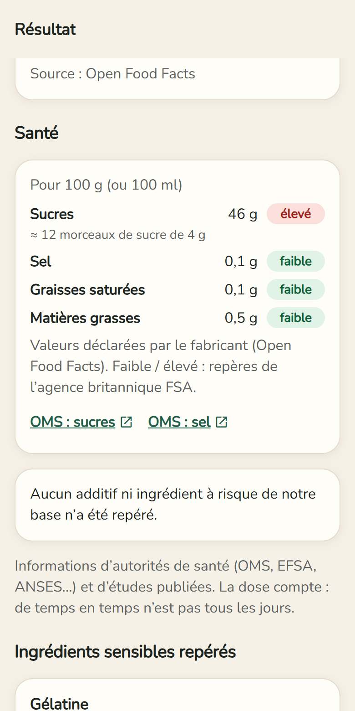
11La fiche d’un ingrédient
- Qu’est-ce que c’est ?, Autres noms (numéros E compris), En détail pour les cas délicats.
- Ce que ça implique pour votre profil, effets sur la santé, sources officielles et vérifiées avec la date de vérification.
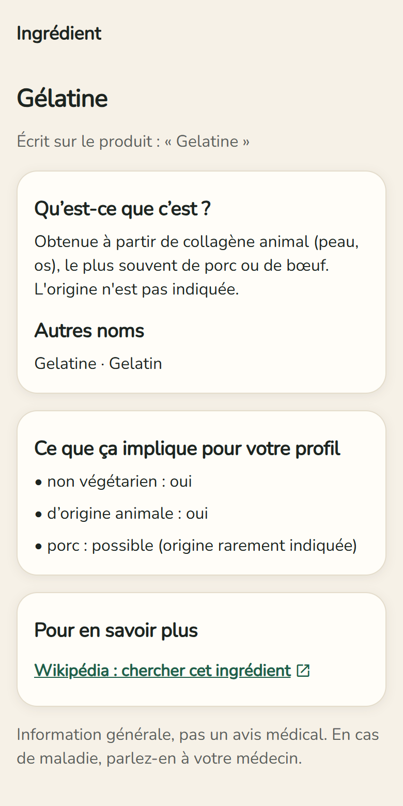
12Comparer deux produits
- Sur un produit : ⇄ Comparer, puis scannez ou choisissez le 2e produit.
- Les deux côte à côte : verdict, sucres, sel, graisses, additifs, Nutri-Score. Le meilleur est marqué mieux.
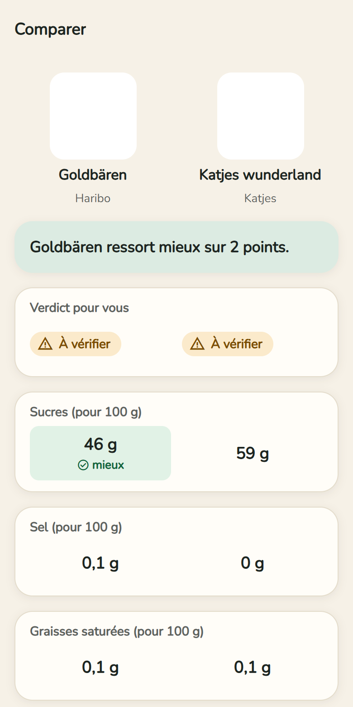
13Historique et favoris
- Barre du bas → Historique : tous les produits consultés, même sans Internet.
- Filtres : Tous / ★ Favoris, par verdict et par catégorie. Les verdicts sont recalculés avec le profil choisi.
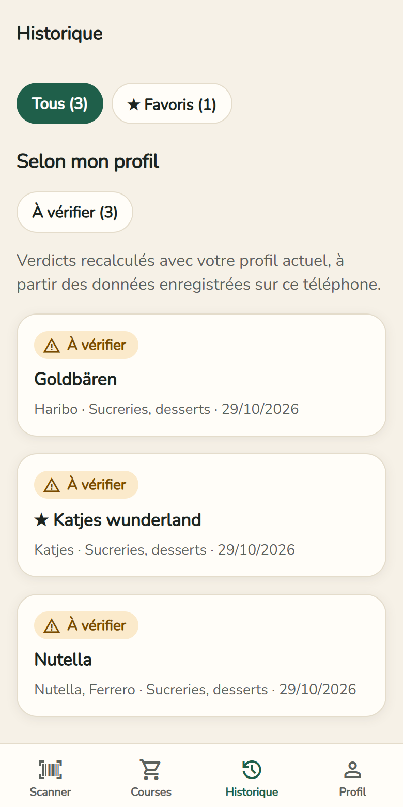
14Courses : la liste
- Deux façons : sur un produit, + Liste de courses ; ou, en haut de la liste, écrivez ce que vous voulez (ex. « lait ») et validez avec +.
- Barre du bas → Courses → en haut Liste. Cochez ce que vous avez acheté ; Envoyer la liste par WhatsApp, SMS ou e-mail (avec quantités et dates).
- Filtres : À acheter, Favoris, Cette semaine, Achetés, Archives. L’étoile met un article en favori.
- Glisser un article vers la droite = l’archiver, vers la gauche = l’effacer. Un bandeau Annuler apparaît quelques secondes.
- Vous faites les courses pour quelqu’un ? Choisissez son profil en haut : un bandeau rouge signale ce qui ne lui convient pas.
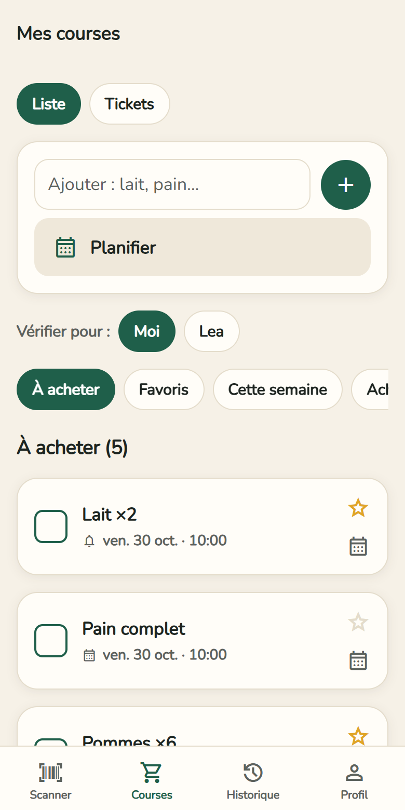
15Planifier ses courses, avec rappel (nouveau)
Touchez Planifier (ou l’icône calendrier d’un article).
- Article et Quantité (ex. « 2 » ou « 500 g »).
- Quand : un jour parmi les 14 prochains (Aujourd’hui, Demain…) et l’heure.
- Rappel (alarme) : à l’heure prévue, 30 min, 1 h ou 1 jour avant. Le rappel est une notification du téléphone : autorisez-la quand Android le demande.
- Favori → Enregistrer. La date apparaît sous l’article (en rouge s’il est en retard).
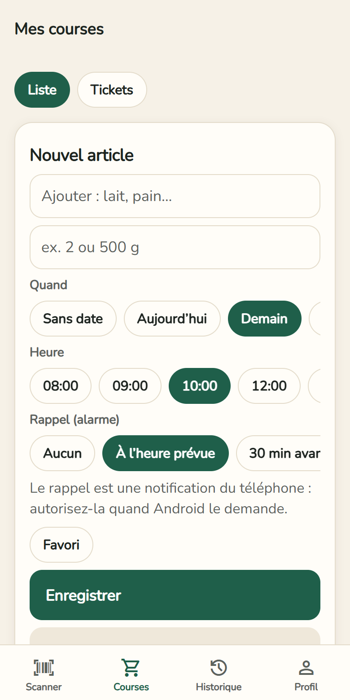
16Courses : les tickets de caisse
Après les courses, gardez un œil sur vos dépenses.
- Barre du bas → Courses → en haut Tickets.
- Filtres : Tous, Favoris, Ce mois, 3 mois, Archives. Au-dessus de la liste : le total et le nombre de tickets du filtre.
- Chaque ticket montre le magasin, la date, le nombre d’articles et le montant ; l’étoile le met en favori. Total vérifié : les articles font exactement le total du ticket. Écart à vérifier : il manque un article ou un prix a été mal lu.
- Glisser vers la droite = archiver, vers la gauche = effacer (avec Annuler).

17Sélectionner et envoyer plusieurs tickets (nouveau)
- Appui long sur un ticket : la sélection commence. Touchez d’autres tickets ; Tout les sélectionne tous.
- Envoyer transmet magasin, date, total et tous les articles par WhatsApp, SMS ou e-mail.
- Archiver et Effacer s’appliquent à tous les tickets choisis (avec Annuler). La croix ✕ en haut quitte la sélection.
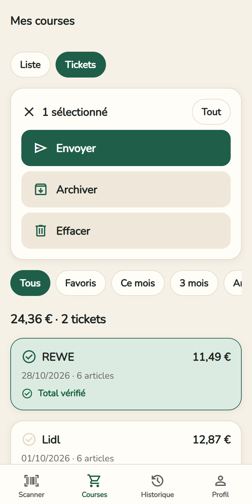
18Ajouter un ticket
- Ajouter un ticket → Scanner le ticket. Le scanner trouve les bords, recadre et redresse l’image. Ticket long : plusieurs prises, de haut en bas, sans chevauchement.
- Le ticket est lu sur le téléphone (même sans Internet) : articles, prix, total, magasin et date. Une photo de la galerie passe par Choisir une photo.
- Relisez et corrigez les articles (nom, prix ; une remise avec un moins : -0,30). Une case vide en rouge est un prix non lu : complétez-la. Photographier la suite du ticket ajoute des articles.
- Le Contrôle du total compare les articles au total du ticket (ou à la table de TVA) → Enregistrer le ticket.
- Facultatif : Scanner le QR code, si le ticket en a un et qu’il est net. Il confirme seulement le total exact ; les articles n’y figurent pas.
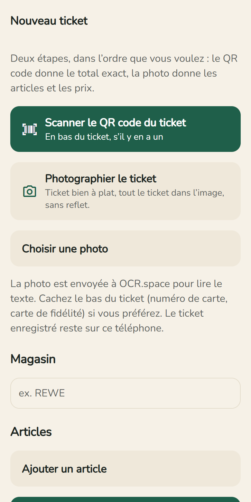
19Consulter un ticket
- Touchez un ticket : total, résultat du contrôle, Paiement (espèces / carte) et Répartition par taux de TVA – 7 % correspond surtout à l’alimentation, 19 % aux boissons, à l’hygiène et au reste.
- Dessous, tous les articles avec leur prix. Remises et consigne rendue apparaissent en vert avec un moins.
- Supprimer ce ticket l’efface (après confirmation).
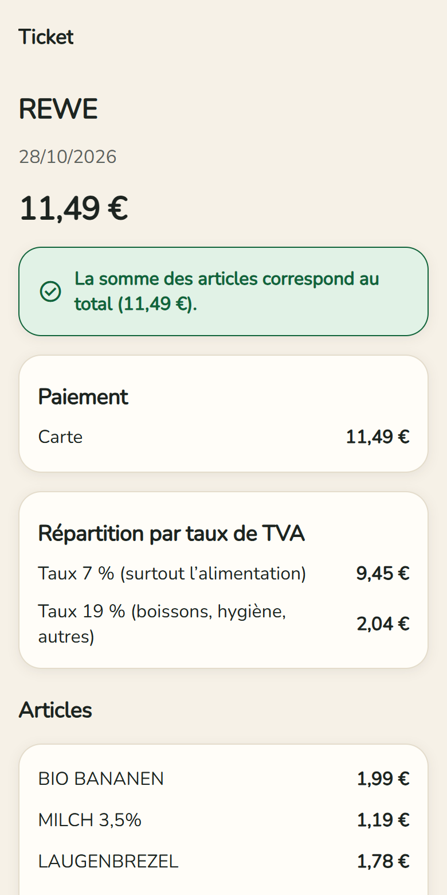
20Rechercher un produit (la loupe)
- Scanner → loupe 🔍 en haut à droite.
- Tapez un nom ou une marque (en allemand, c’est souvent plus efficace) → Rechercher. Chaque résultat est vérifié avec votre profil ; Seulement ceux qui me conviennent filtre.
21Photographier une étiquette, ajouter un produit
- Photographier une étiquette (écran Scanner) : photographiez le paragraphe « Zutaten » à plat et net, relisez le texte → Analyser.
- Produit inconnu : Ajouter ce produit à Open Food Facts – avec votre compte gratuit sur openfoodfacts.org. Il sera ensuite reconnu pour tout le monde.
22Signaler une erreur, mises à jour, tout effacer
- Signaler une erreur (en bas de chaque résultat) : un e-mail prêt, sans votre profil.
- Les mises à jour arrivent toutes seules : « Une nouvelle version de l’app est prête » → Redémarrer. Pour chercher vous-même : Roue → Version de l’app → Rechercher une mise à jour.
- Profil → Mes données → Tout supprimer : profils, historique, favoris, liste de courses, tickets et compte sont effacés du téléphone.
Partie C — À savoir
- L’app ne remplace ni l’emballage, ni votre médecin, ni une autorité religieuse. Elle ne certifie rien. En cas d’allergie grave, lisez toujours l’étiquette.
- Quand elle ne sait pas, elle le dit (« Inconnu », confiance faible).
- Aucune publicité, aucun compte obligatoire. Données produits : Open Food Facts (licence ODbL). Pour lire une photo, l’image est envoyée au service OCR.space ; votre profil, jamais.
- Questions ou idées ? Écrivez à draboibro@gmail.com.